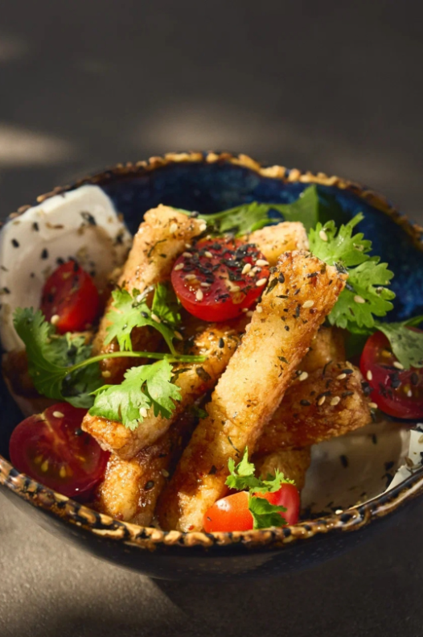
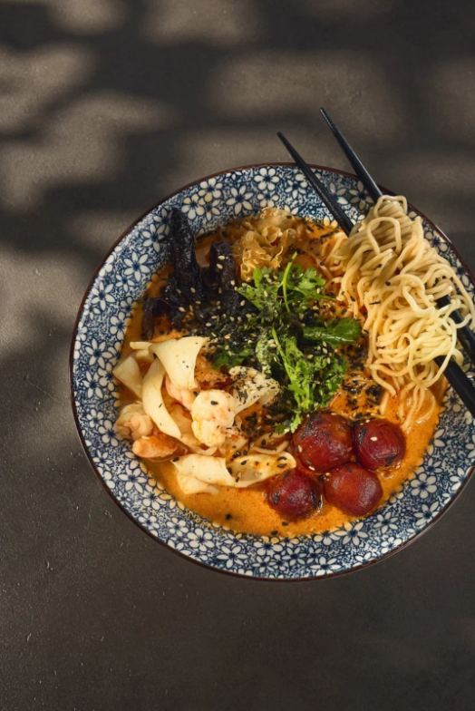

Салаты и поке
7 позиций
Легендарные хрустящие баклажаны
Баклажаны после обжарки становятся золотистыми и аппетитно хрустящими снаружи, оставаясь нежными внутри. Сочные помидоры черри и творожный сыр, мёд и рисовый уксус, соевый и устричный соусы, чесночно-имбирная паста, соус свит чили, перец Шичими, кинза и кунжут.

Салат с камчатским крабом и авокадо
Хрустящие листья салата, спелые томаты, авокадо и мясо камчатского краба. Чёрная икра тобико. Заправка: соус айоли-чили, свит чили, Шисо таре и креветочное масло.

Салат с ростбифом, кукурузой гриль и гранатовым терияки
Нежный ростбиф из говяжьей вырезки, листья салата и шпинат, кукуруза гриль, помидоры черри, хрустящие огурцы. Соусы терияки и наршараб.
Поке с лососем
Сочный лосось, сливочное авокадо, хрустящие эдамаме, помидоры черри. Заправка: соевый соус, свит чили, имбирно-чесночная основа.
Поке с креветками
Сочные креветки, авокадо, эдамаме, черри. Заправка: соевый соус, свит чили, имбирь и чеснок.
Поке с тунцом
Свежий тунец, авокадо, эдамаме, помидоры черри. Соус свит чили, чеснок, корень имбиря, лемонграсс, листья лайма.
Поке с крабом
Листья салата, томаты, авокадо, мясо камчатского краба. Икра тобико, айоли-чили, свит чили, Шисо таре, креветочное масло.
Закуски
9 позицийХрустящие креветки, соус айоли-чили
Креветки в темпуре с многослойной панировкой, кинза, сушёные нити перца чили. Приправа умами на базе водорослей нори, анчоусов и стружки тунца.
Пончики с крабом и умами
Золотистые пончики с начинкой из краба и творожного сыра. Соус васаби-майо, соевый соус, кунжутное масло, лимонный фреш.
Цыплёнок карааге
Филе куриной грудки в маринаде: соевый соус Амой, устричный соус, терияки, мёд, японский мирин, чесночно-имбирная паста, рисовый уксус и лимонный фреш.
Попкорн из креветок с кремом из авокадо
Креветки в маринаде с соевым соусом Амой, чесноком, кунжутным маслом и наршарабом. Крем из авокадо, томаты конкассе, соус Шио Таре.
Маринованный бамбук
Хрустящие стебли бамбука в маринаде терияки и наршараб. Водоросли вакаме, кунжут.
Маринованный муэр и ледяной гриб
Древесный гриб муэр и ледяной гриб в соусе терияки и наршараб. Водоросли нори, кунжут.
Картофель фри с ао-нори и соусом васаби
Хрустящий картофель фри с водорослями ао-нори и приправой умами. Соус васаби-майонез с соевым соусом Амой, лимонным фрешем и сгущённым молоком.
Яйца адзитама с айоли-чили
Яйца адзитама в маринаде из соевого соуса и мирина, кунжутное масло. Соус айоли-чили с перцем Шичими и свит чили.
Паровая булочка бао
Мягкая паровая булочка бао.
Кимчи
3 позицииЧерри кимчи
Помидоры черри в маринаде с чесноком, корнем имбиря и перцем чили. Лемонграсс, листья лайма, соевый соус Амой, свит чили, перец Шичими, кунжут.
Капуста кимчи
Пекинская капуста после ферментации, груша и яблоко для сладости, чеснок и корень имбиря, рыбный соус, перец Шичими.
Сет кимчи: огурцы, капуста, ананасы, черри
Яркий сет из азиатских закусок. 240 г.
Рамены
5 позицийРамен со свининой Чашу
Богатый бульон на тушке курицы, куриных лапках и свинине. Свиная шея чашу, лапша собственного приготовления, анчоусы, водоросли комбу, стружка тунца, грибы шиитаке, маринованное яйцо. Перец чили, масло маю.
Рамен с ростбифом и бамбуком
Мясной, насыщенный, умами. Ростбиф даёт выраженную мясную ноту, бамбук — свежий хрустящий контраст.
Рамен с цыплёнком
Насыщенный бульон на курином и свином мясе, чеснок, корень имбиря, репчатый лук. Анчоусы, шиитаке, комбу, стружка тунца. Филе куриной грудки чашу, соус Шио Таре, маринованное яйцо, ростки сои.
Чеддер рамен с уткой су-вид и жареным дошиком
Насыщенный бульон с умами-ингредиентами. Соус Шисо Таре. Сыр чеддер для сливочной насыщенности, утиная грудка су-вид, кукуруза, жареная лапша.
Императорский рамен том-ям
Союз японской и тайской кухни. Паста том-ям, лемонграсс, листья лайма, перец чили, корень имбиря, рыбный соус. Креветки и кальмары, черри, лапша.
Вок
6 позицийЖареный рис с креветками
Рис жасмин, сочные креветки, болгарский перец, цукини, красный лук, куриное яйцо. Паста карри и паста кочудян.
Жареный рис карри с уткой и гранатовым терияки
Рис жасмин, утиная грудка су-вид, овощи, кукуруза. Паста карри, соусы терияки и наршараб.
Жареный рис со свининой Тонкацу и бамбуком
Рис жасмин, свинина ча-шу су-вид, болгарский перец, цукини, красный лук, маринованные стебли бамбука.
Лапша с морепродуктами том-ям
Острая кислинка том-яма, лапша, морепродукты, стручковая фасоль, красный лук, болгарский перец, цукини. Соус том-ям, сушёные нити перца.
Лапша карбонара по-азиатски
Азиатская интерпретация классической карбонары.
Ролл с тунцом, ананасом кимчи и эдамаме
Филе тунца, творожный сыр, бобы эдамаме, ананасы кимчи. Соус копчёный понзу.
Бенто-ланч
4 позицииБенто 1
Капуста кимчи, чука салат с ореховым соусом, жареный рис с цыплёнком карааге, маки с лососем.
Бенто 2
Маринованный бамбук, овощная нарезка с творожным сыром, лапша с овощами и цыплёнком су-вид, маки с тунцом.
Бенто 3
Маринованный муэр и ледяной гриб, салат с ростбифом, лапша с овощами и тигровыми креветками, маки с огурцом.
Бенто 4
Огурцы кимчи, салат с крабом, жареный рис со свининой чашу, маки с авокадо.
Напитки
13 позицийАйс-латте Лаванда — Смородина
Лимонад Клубника — Ваниль
Холодный чай Личи — Лемонграсс
Эспрессо
Американо
Капучино
Латте
Ванильный раф
Листовой чай
Домашний чай Персик — Личи
Домашний чай Камаманси — Маракуйя
Балтика 0
Мисо суп с тофу и шиитаке
Десерты
2 позицииМоти картошка
Моти с картофельной начинкой.
Брауни с кремом из варёной сгущёнки и свежими фруктами
Шоколадный брауни с кремом из варёной сгущёнки и свежими фруктами.